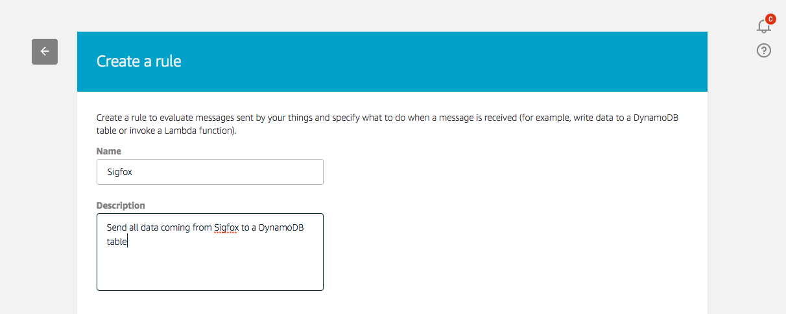

Connect your devices to AWS IoT using the Sigfox network
This lab explores using Sigfox with AWS. This lab is sourced from https://aws.amazon.com/blogs/iot/connect-your-devices-to-aws-iot-using-the-sigfox-network/
Send data from Sigfox to AWS IoT
In a previous lab you connected objects to the Sigfox network. In this lab you will configure the native AWS IoT connector to push your data to the AWS Cloud. To make things a bit more interesting, we will use AWS Simple Notification Service to publish the data and subscribe a SMS service

In order to implement this architecture, we are going to perform the following steps:
- Configure the AWS IoT Connector in the Sigfox Console
- Provision the necessary resources on AWS so Sigfox can send data into your AWS account securely through the AWS IoT connector using a CloudFormation script that will generate IAM roles and permissions.
- Manually create a rule in AWS IoT and a SNS topic so we can publish the data coming from Sigfox
In our example, we are using the EU-West-01 region. Once you gain knowledge on how to configure the different pieces, then customize the implementation to fit your needs.
First, log into the Sigfox console, go to the “Callbacks” section and click on the “New” button to create a new “Callback”.

Now select the “AWS IoT” option as the type of “Callback”.

Please copy the “External Id” given to you in your clipboard, it will be useful later. The “External Id” is unique to your account and enables greater security when authorizing third party to access your AWS resources, you can find more information here.
Next click on “Launch Stack” and leave the “CROSS_ACCOUNT” option selected.

This will redirect you to the AWS CloudFormation console, click “Next” on the first screen.

On the following screen, enter the following inputs:
- Stack name: Choose a meaningful name for the connector.
- AWSAccountId: Input your AWS Account Id, you can find it here.
- External Id: Copy/paste the external Id given to you in the Sigfox console.
- Region: Choose EU-West Region
- Topic Name: Choose the topic name you wish to send data to.
Click “Next” once you are ready.

The next screen is optional, if you wish you can customize options (Tags, Permissions, Notifications) otherwise click on “Next” to continue with the default options. You should now be on the review screen, check the “I acknowledge that AWS CloudFormation might create IAM resources” _box and click on “Create”_ to launch the CloudFormation stack.
After a few minutes the provisioning should be completed.

After selecting the AWS CloudFormation stack, click on the “Outputs” tab and copy the value for the “ARNRole” key, the “Region” key and the “Topic” key.

Go Back to the Sigfox console and paste the values you copied from the “Output” section of the AWS CloudFormation stack. Please also fill out the “Json Body” field in the Sigfox console. This JSON represents the payload that will be sent to AWS IoT using the native connector and contains the payload from the connected device as well as some metadata. This is a point for future customization using the Sigfox documentation if you wish to do so.
{
"device" : "{device}",
"data" : "{data}",
"time" : "{time}",
"snr" : "{snr}",
"station" : "{station}",
"avgSnr" : "{avgSnr}",
"lat" : "{lat}",
"lng" : "{lng}",
"rssi" : "{rssi}",
"seqNumber" : "{seqNumber}"
}
Finally, click “Ok”.

You now have successfully created your callback and can visualize the data sent to it.

Now that the data is being sent to AWS IoT via the native connector, we will create an AWS IoT Rule to store the data into an Amazon DynamoDB table.
Create AWS Simple Notification Service Topic
Now that you're signed up for Amazon SNS, you're ready to create a topic. A topic is a communication channel to send messages and subscribe to notifications. It provides an access point for publishers and subscribers to communicate with each other. In this section you create a topic named MyTopic.
Create a new Topic
In the Amazon SNS console, click Create topic.
The Create topic dialog box appears.
In the Topic name box, type the topic name sigfox
Click Create topic.
The new topic appears in the Topics page.
Select the new topic and then click the topic ARN.
The Topic Details page appears.

Copy the topic ARN for the next task.
Subscribe to Sigfox Topic
To receive messages published to a topic, you have to subscribe an endpoint to that topic. An endpoint is a mobile app, web server, email address, or an Amazon SQS queue that can receive notification messages from Amazon SNS. Once you subscribe an endpoint to a topic and the subscription is confirmed, the endpoint will receive all messages published to that topic.
In this section you subscribe an endpoint to the topic you just created in the previous section. You configure the subscription to send the topic messages to your email account.
To subscribe to a topic
Open the Amazon SNS console at https://console.aws.amazon.com/sns/v2/home.
Click Create subscription.
The Create Subscription dialog box appears.
In the Topic ARN field, paste the topic ARN you created in the previous task, for example:
arn:aws:sns:eu-west-1:111122223333:MyTopic.In the Protocol drop-down box, select Email.
In the Endpoint box, type an email address you can use to receive the notification.
Important Entourage Users: Entourage strips out the confirmation URL. Type an email address you can access in a different email application.Click Create subscription.

Go to your email application and open the message from AWS Notifications, and then click the link to confirm your subscription.
Your web browser displays a confirmation response from Amazon SNS.
Add IoT Rule
Now, go to the AWS IoT console and create a new rule.

Now we will send every message payload coming from Sigfox in its entirety to the SNS topic.Use “sigfox” as the topic filter, and no conditions.
Next add an action, select “Send Message as SNS push Notification”.
Select the SNS topic you created previously. In the SNS target select your topic and set the message format as "raw". Finally, create a new role by clicking on the “Create a new role” button. Name it “SNSsigfox” and click again on the “Create a new role”, you can now select it in the drop-down list. Thanks to this IAM role, AWS IoT can push data on your behalf to the SNS topic using the proper permissions.
Add the action to the rule and create the rule. You should now be able to visualize the newly created rule in the AWS Console.
The final step is to go to your email and observe the messages from the SNS push.
Using this example’s basic flow, you can now create other AWS IoT rules that route the data to other AWS services. You might want to perform archiving, analytics, machine learning, monitoring, alerting and other functions.